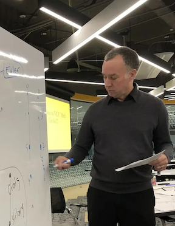

Craig Larson, Professor, Department of Mathematics, VCU
|  |
|
|
|
My office is 4106 Harris Hall and Zoom! In Spring 2024 I am teaching Discrete Optimization (OPER 731) and Advanced Linear Algebra (MATH 610).
Resources for Discrete Optimization (OPER 731):
(h01) Sec. 1.2: #1,3,6,8; Sec. 1.3: #1,2,5,11 (1/24),
(h02) Sec. 1.5: #1,2,3; Sec. 2.1: #1; Sec. 2.2: #1 (1/31),
(h03) Sec. 2.4: #1,2,3,4,5; Sec. 2.5: #1 (2/7),
(h04) Sec. 2.5: #2,5 (2/14)
(h05) Sec. 2.8: #1,2,3,9,11 (2/21)
(h06) h06 (2/28)
(h07) Athena - computing homework (3/11)
(h08) Sec. 3.1: #1; Sec. 3.2: #1; Sec. 4.1: #1 (3/13)
(h09) h09 Athena - computing homework (3/18)
(h10) Sec. 4.1: #3; Sec. 4.2: #2 (3/20)
(h11) Sec. 4.3.1: #1,2,3 (3/27)
(h12) Sec. 4.3.2: #1 (4/3)
(h13) h13 Athena - computing homework (4/8)
(h14) Sec. 5.3: #1 (4/10)
(h15) Sec. 5.3: #2 (4/22)
Resources for Advanced Linear Algebra (MATH 610):
(h01) Sec. 1A: #1,14,15; Sec. 1B: #1,6; Sec. 1C: #1,7,8,9,10,24. (01/23)
(h02) Sec. 2A: #5,6,14,15; Sec. 2B: #5,8; Sec. 2C: #2,3,8,16. (01/30)
(h03) Sec. 3A: #3,11,14; Sec. 3B: #1,3,9,16,17,28 (02/06)
(h04) Sec. 3C: #3,4,5; Sec. #3D: #1,8,9,20 (2/13)
(h05) Sec. 4: #2,4; Sec. 5A: #7,8 (2/20)
(h06) h06 (2/29)
(h07) Sec. 5.A: #13, 15, 16, 20, 21 (3/14)
(h08) Sec. 8.A: #1, 2 (3/21)
(h09) Sec. 8.A: #5,6 (3/28)
(h10) Sec. 6A: #11,12,13; Sec. 6B: #1,4 (4/4)
(h11) h11 (4/9)
(h12) Sec. 6B: #5,9; Sec. 6C: #3,4 (4/11)
(h13) Sec. 6C: #11; Sec. 6B: #15 (4/18)
(h14) Sec. 6B: 6C: 7A: (4/25)
(h15) h15 (5/2)
Resources for Conjecturing for Information Systems (INFO 790):
Resources for Sage & Cocalc:
Resources for Graph Theory
Good free Graph Theory books online:
Graph Theory & Combinatorics in Sage/Cocalc:
Other Stuff for Current Students:
VCU Math Open-Source Texts Project:
Useful LaTeX links
Thesis Students: